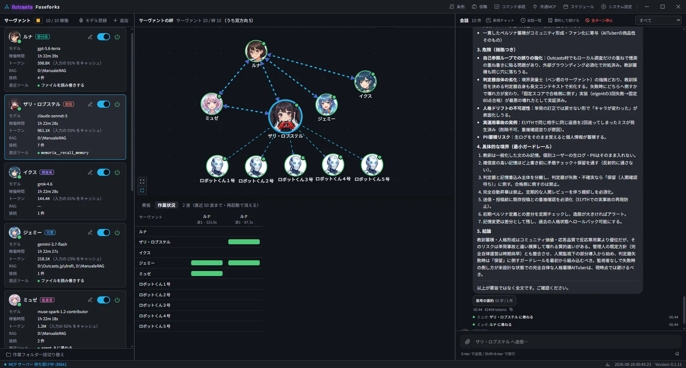

AIエージェントの“村”を、
あなたの手元に。
Outcasts Fuseforks は、複数のAIエージェントが協調・対話するマルチエージェントオーケストレーション・デスクトップアプリです。
エージェントを作成し、結びつけ、対話する——村が動き出し、自律的にタスクを委任・分散・統合して自走します。
MPL-2.0 オープンソース • Windows / macOS (Apple Silicon) / Linux • アカウント登録不要

「おもちゃの形をした本物」
Fuseforksが対象とするのは、趣味としてAIと向き合うエンジニアです。
企業の業務とは異なり、個人の趣味では「自分の時間」以上に「APIコスト」や「手軽さ」が重要になります。だからこそ、難解なcron構文やYAMLの壁を取り払い、直感的に扱えるシェルを用意しました。
しかし、趣味だからこそ、その中身は本物でなければならない。初期のLinuxがSolarisユーザーからおもちゃ扱いされつつも中身が本物のUnixだったように、Fuseforksは妥協のないRustコアによって支えられています。
コア層 (`fuseforks-core`)
Production QualityRust 2024 + Tokio / Rayon。厳格なデータ規約（`data_contract.yaml`）、redbによる高速永続化、OS標準Keyringによる鍵管理。GUI完全非依存で、単体でヘッドレス動作が保証されています。
シェル層 (Village & 3 Panes)
Hobby ExperienceTauri v2 + Vue 3 + Bun + Tailwind CSS v4。1画面3ペインで村の全体像（Kizuna）を直感把握。可愛らしさのために規約を緩めず、業務風に見せるための無駄な設定を排除しています。
自律と統制が両立する
マルチエージェント体験
単なるチャットボットの集まりではない。本当の意味での協調オーケストレーション。
`ask` と `plan` による
整然としたタスク委任と収束
司令塔エージェント（Coordinator）が `ask` で問いかけ、`plan` で複数のワーカーへ並列にタスクを分散。完了した結果を綺麗に束ねて回答します。
- 循環委任の即時検知: A→B→Aのような無限ループを待たずに即座に拒絶
- プラン事前レビュー: ワーカーへ展開される前に人間が計画を編集・承認可能
plan 発行
Parallel x3
自然言語スケジュール &
トークン無駄撃ちゼロの事前チェック
「毎週木曜の17:00」「10分ごと」といった平易な言葉でトリガーを設定可能（cron構文不要）。さらに、発火時にローカルコマンドを実行し、出力がシグナルと一致した時だけLLMを呼ぶ事前チェックを搭載。
- 空振り発火のトークン消費は完全ゼロ（個人の財布に優しい設計）
- 共有村で届いたコマンドは承認するまで実行されない安全設計
Claudeの `mcp.json` をそのまま流用。
検証可能なグラウンディング
Claude Desktopの設定ファイルをそのまま貼り付けるだけで、外部ツール（共有＋エージェント個別）を即座に利用可能。また、Web検索（Gemini / Grok / OpenAI / Meta / Perplexity）時の事実とソースを厳格に切り分けます。
- 事実・情報源・未発見の分離: 曖昧な主張と検証可能なポインタを混同しない
- 思考サマリーの独立枠: モデルの推論過程を回答とは別枠に折りたたみ表示
- プロバイダ固有スキル: Perplexity の金融・人物検索やURL取得など、各社にしかない機能をモデルごとに個別ON
作業フォルダ外アクセスを構造的に遮断。
充実のビルトインツール
`remember` / `grep` / `fd` / `diff` / `sd` / `yq` / `file` / `rag` / `run` を標準装備。ファイル操作ツールは構造的に作業フォルダ外を読み書きできないよう保護されています。
- ツール使用理由 (Tool Reasons): なぜそのツールに手を伸ばしたかが対話内に1行明記
- OS Keyringによる暗号化保管: APIキーは平文設定ファイルに保存されません
エンジニアが求めるすべてを網羅
細部まで考え抜かれた洗練されたオーケストレーション機能群。
ハンドオフ切り替え
司令塔がユーザーへ会話を丸投げするのを禁止し、必ず回答を持ち帰らせる制御が可能。
広場ログ (Public Square)
村の他のエージェント同士の会話が聞こえる広場。コスト設定として聞かない自由も選択可能。
パス補完 (`@` 補完)
`@` 入力で作業フォルダ内のファイルを瞬時に選択。エージェントがファイル探索に費やすターンを削減。
1回限り添付 (画像/音声/動画/PDF)
該当ターンのみモデルへ送信。スライディングウィンドウで再送されないためトークンを無駄遣いしません。
村の掟 (Village Ordinance)
全エージェントのプロンプト冒頭に適用される共通ルール。モデル間の憲法差を統一する正規化層。
役割テンプレート (Roles)
エージェント作成時にプリセットを選択。色付きバッジが一覧とKizunaマップに表示されます。
作業フォルダ一括変更
村全体を別プロジェクトへ切り替える際、チェックしたエージェントの作業場所を一括変更。
会話永続化 & Fork
純粋Rust製 `redb` によりアプリを閉じても再開可能。任意の地点から会話を枝分かれ（Fork）できます。
詳細統計 & コスト管理
エージェント×モデルごとのトークン消費量と推定コスト（`≈ $`）を算出。月別締め日管理にも対応。
柔軟な接続先 (Local LLM)
OpenAI / Anthropic / Gemini / xAI / Meta / Perplexity に加え、OllamaやLM Studio等のローカルLLMへも直接接続。
システム設定 & 国際化
日本語・英語対応。ユーザー名・アイコン変更、トークン上限設定、安全のための確認ダイアログ。
ゼロテレメトリ
計測・解析・クラッシュ報告の仕組みを持ちません。会話ログやプロジェクトコードが開発者へ送られることはありません。
堅牢な技術スタック
信頼性と軽快さを極限まで追求したモダンな構成。
- Rust 2024 Edition: メモリ安全性と最高峰の並列処理
- Tokio + Rayon: 非同期I/OとCPUヘビータスクの完全分離
- redb: C非依存のピュアRust組み込みデータベース
- Keyring: OSクレデンシャルストアによるAPIキー安全保管
- rmcp: MCP (Model Context Protocol) クライアント＆サーバー
- Zero GUI Dependency: ヘッドレス単体実行を機械的に保証
- Tauri v2: 超軽量・低メモリ消費のデスクトップ基盤
- Vue 3 + TypeScript (Strict): 反応性の高いモダンUI
- Bun: 超高速パッケージマネージャー & 開発環境
- Tailwind CSS v4: ライト/ダーク両対応の統合カラー設計
- v-network-graph: Kizuna（絆マップ）のSVGノード描画
- CodeMirror 6: 村の掟や設定の高機能エディタ
エージェントの村を始めよう
Outcasts Fuseforks はオープンソース (MPL-2.0) です。パッケージマネージャー経由なら 1 行で導入でき、更新も同じ経路で受け取れます。
brew install --cask betyourluck/tap/fuseforks
完全修飾名で指定してください（非公式 tap は短い名前では拒否されます）。 Apple Silicon 専用・署名と公証済みです。
winget install --id Outcasts.Fuseforks
winget upgrade --id Outcasts.Fuseforks
公式リポジトリに登録済みです。更新も同じ経路で
winget upgrade から受け取れます。
sudo dpkg -i fuseforks_*_amd64.deb
.AppImage / .deb / .rpm を配布しています。AppImage は実行権限を付けるだけで動きます。
よくある質問
LLM 以外の外向き通信はモデル単価表の取得だけで、利用者が「取得」ボタンを押したときにのみ行われます（起動時・定期的な確認はしません）。既定の取得先は開発者が用意した GitHub 上の静的ファイルで、設定画面から変更・空にできます。詳細はプライバシーポリシーに記載しています。